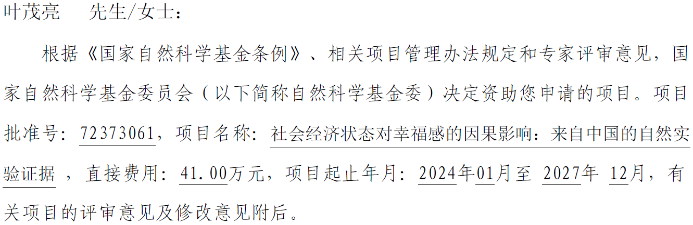

2023年8月份，叶茂亮副教授再次获得国家自然科学基金面上项目资助，题目为“社会经济状态对幸福感的因果影响：来自中国的自然实验证据”，相关领域代码为G0302（行为经济与实验经济）及G0313（人口劳动与健康经济）。近年来幸福感研究在国内外经济学界得到的关注和产生的影响日益增强。但既有研究普遍面临两个局限性：一是影响幸福感的因素是内生决定的，数据中的相关性不一定等于因果性；二是对中国人的幸福感研究在数量和质量上仍有不足。该项目拟以因果推断和中国场景为特色，推动相关研究前沿。审议专家们总体上对该申请书给予正面评价，也提出了若干有帮助的建设性建议，体现了领域同行学者对其在幸福感方面研究成果及研究计划的肯定和关注。叶老师将根据专家意见，高质量完成相关研究工作。

幸福感研究在经济学可以归属于行为经济学、人口与劳动经济学、发展经济学、公共经济学，也和心理学和公共政策、社会科学密切相关，是叶茂亮副教授主要研究领域之一。叶老师在幸福感及相关心理健康议题上的研究已先后发表于PNAS、Governance、Social Indicators Research、Applied Economics Letters等国际刊物，并有多篇相关工作论文和多项研究工作进展。叶老师将在相关（经济/心理）理论、统计计量方法论及应用（descriptive/positive但引入因果推断+prescriptive/normative政策干预两个角度）等方面继续深入探索，也将加深和国内外相关学者的交流合作。
此前在2020年叶老师已获得家自然科学基金面上项目资助，题目为“基于社会偏好和有限理性的团队协作激励理论及实验研究”，相关领域代码为G0302（行为经济与实验经济）。
叶老师在行为与实验经济学、劳动经济学、公共政策与政治经济学、发展经济学、管理经济学等应用微观经济学领域有多年科研积累。其部分研究成果已发表于PNAS、Management Science、Governance、Journal of Comparative Economics、European Journal of Political Economy、Social Indicators Research等国际顶级和知名刊物。